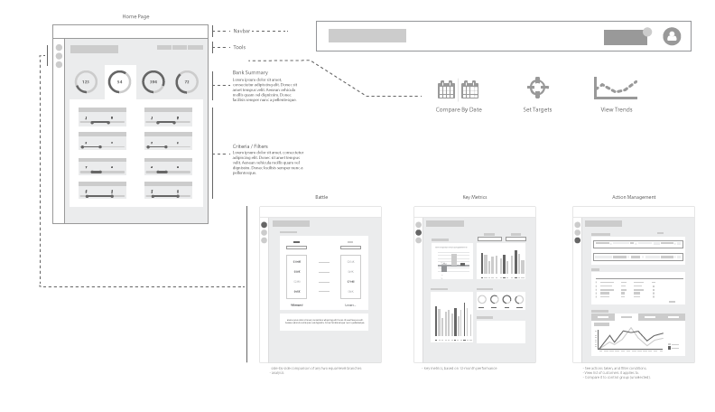
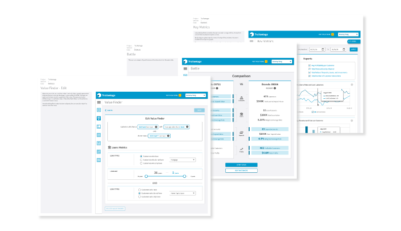

Requirements
Information regarding the business needs and requirements was provided by the business / product owners, often in the form of detailed use cases. This also provided an opportunity to get acquianted with banking terminology and concepts. Myself and my manager carried a dialogue with the business in order to clarify vagueness and question UX value of many requirements, as needed.

User Flow
As the numerous features and modules began to reveal themselves, it was naturally important to begin to organize the structure and flow in the format of an interface. Additionally, marketing and sales needs for visual representations lead to the creation of wireframe-like graphics that aid conveying the high-level functionality of the application.

Wireframes
With further clarification of requirements and establishment of visual design, high-fidelity wireframes were created both to convey the actual experience but also as detailed documentation for the offshore software developers.

Style Guide
Based on the functional wireframes, I applied the appropriate typograhy, color palette, general feel based on Google Material Design. The typography and color palatte aim to convey both a a friendly but mature feel. The blue provided a positively calm and controlled sensibilty, while allowing for use of green and red as visual indicators as needed within the application.
As the application evolved, I maintained these in both a style guide document and in a living style guide.
TruVantage is in development.